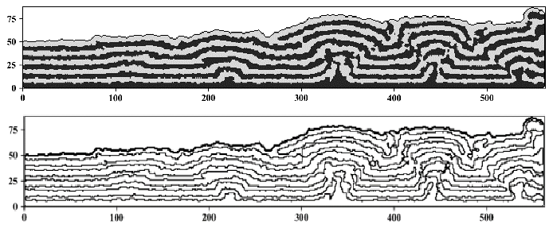
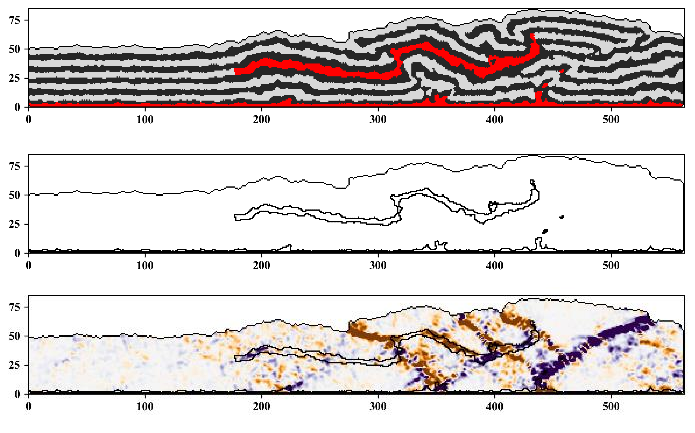
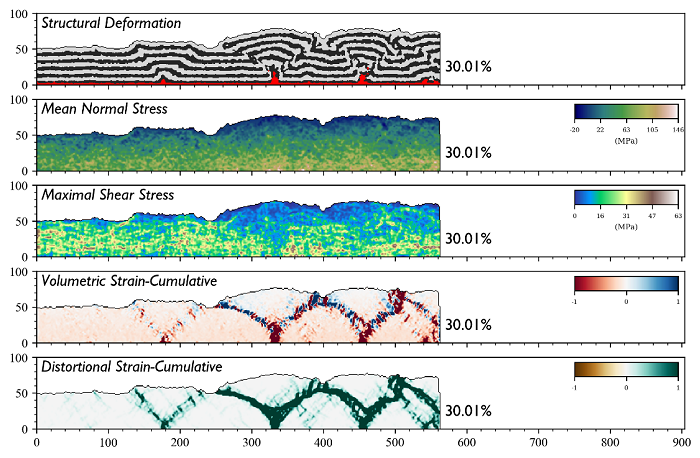

近期，我们将邀请南京大学硕士研究生魏华敬讲解他在离散元后处理方面的研究成果 DEMpost ，感兴趣的老师同学可以先下载魏华敬的硕士论文学习，报告时间另行通知。
论文下载
题目：基于离散元的褶皱冲断带构造变形定量分析与模拟
作者：魏华敬
推荐理由
本文研发的离散元后处理程序 DEMpost 可以提取颗粒体系地层边界，勾勒出特定岩层范围，绘制应力应变、速度和位移场等各种云图，是构造变形定量研究不可或缺的工具之一。
  提取地层界线
识别盐层范围
绘制应力应变
摘要
离散元方法是一种用微观颗粒体系模拟宏观物体变形的数值模拟手段，在岩土工程，构造模拟，物料运移等领域应用广泛。 构造数值模拟作为一种重要的构造定量化研究手段， 通过建立起构造的变形机制与几何分析的联系，一定程度上摆脱传统构造分析方法在含盐褶皱冲断带研究的局限性。离散元数值模拟能够在呈现构造变形基础之上，通过追踪模拟中颗粒在每一个时刻的受力及运动状态，给出体系的应力应变状态及速度位移场的情况，进而能够研究小尺度的变形及裂缝，实现对含盐褶皱冲断构造的定量化研究，具有重要科学价值和经济意义。 因此，如何高效地表达构造模拟中的动力学和运动学特征的分布情况，具有重要的应用价值。 本文基于文献调研，算法设计与开发，计算实例以及构造数值模拟实验完成了以下工作：
调研文献讨论了多维度的后处理分析对构造模拟的重要性：构造变形反映构造整体形态的基础上，应变的分布能反映模型中小尺度构造变形，速度场的分布能够得出不同构造单元的运动状态，位移梯度则能够更为细致地展现裂缝分布。
设计并开发了适配离散元软件 YADE 的后处理计算及可视化分析模块 DEMpost。 通过光栅化算法将颗粒体系以图像的形式呈现，通过反距离加权插值算法将颗粒体系的应力应变等特征以图像的形式呈现，通过其他图像处理的算法提升了以上图像的质量。图像形式的构造变形图像与特征图谱之间能够建立起关联，便于追踪特定构造单元在构造演化过程中的动力学与运动学特征。
设计系统的离散元数值模拟实验，分析了含盐褶皱冲断带构造中常见因素的影响，基于DEMpost 实现构造模拟的后处理可视化，探讨了构造变形与动力学及运动学特征的映射关系， 模拟的结果表明： 底部单膏盐层的存在使得应力应变迅速传播到构造边界，整个模型内部出现收缩挤压情况，发育“箱状”构造；双膏盐层的存在将与共轭断裂相伴的刚性抬升转化为具有流变性质的揉皱构造，膏盐层内部应力应变状态稳定，对构造的影响表现为产生应变分散和三角剪切带，且具有一定的辐射范围； 先存断裂促进断层的上盘沿断裂向上移动，先存断裂的倾向、倾角、规模等因素影响上盘移动的方向和距离，进而影响变形传播的范围。
关键词：离散元； 后处理；光栅化；空间插值；图像处理； 构造数值模拟； 定量分析
目录：
- 绪论
- 1.1 褶皱冲断带与构造定量化研究
- 1.2 离散元软件简介
- 1.3 本文内容提要
- 1.4 研究方法与技术路线
- 1.5 论文工作量
- 离散元后处理技术的算法设计与开发
- 2.1 数据预处理
- 2.2 离散元成像
- 2.2.1 构造变形图像
- 2.2.2 动力学及运动学特征图谱
- 2.3 图像增强处理
- 2.3.1 高频噪声压制
- 2.3.2 区域边界提取
- 2.3.2 体系轮廓表达
- 2.4 小结
- 离散元后处理技术的计算实例与优势
- 3.1 离散元后处理算法计算实例
- 3.2 离散元后处理算法计算优势
- 3.3 小结
- 离散元后处理技术在含盐褶皱冲断构造模拟的应用
- 4.1 单膏盐层
- 4.2 双膏盐层
- 4.2.1 膏盐层垂向规模
- 4.2.2 膏盐层横向规模
- 4.2.3 膏盐层垂向分布
- 4.2.4 膏盐层横向分布
- 4.3 先存断裂
- 4.3.1 先存断裂倾向
- 4.3.2 先存断层倾角
- 4.3.3 先存断裂垂向分布
- 4.3.4 先存断裂横向分布
- 4.3.5 先存断裂规模
- 4.4 小结
- 结论及展望
- 5.1 结论
- 5.2 展望